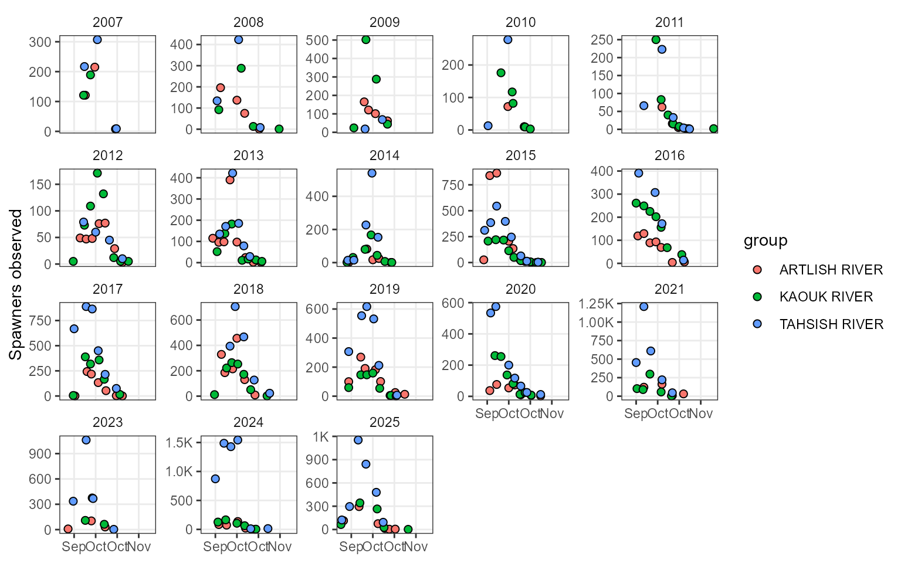
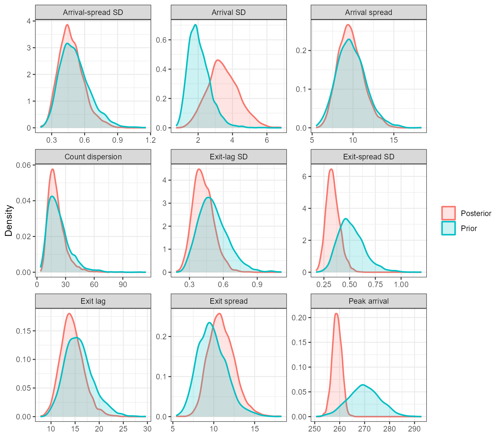
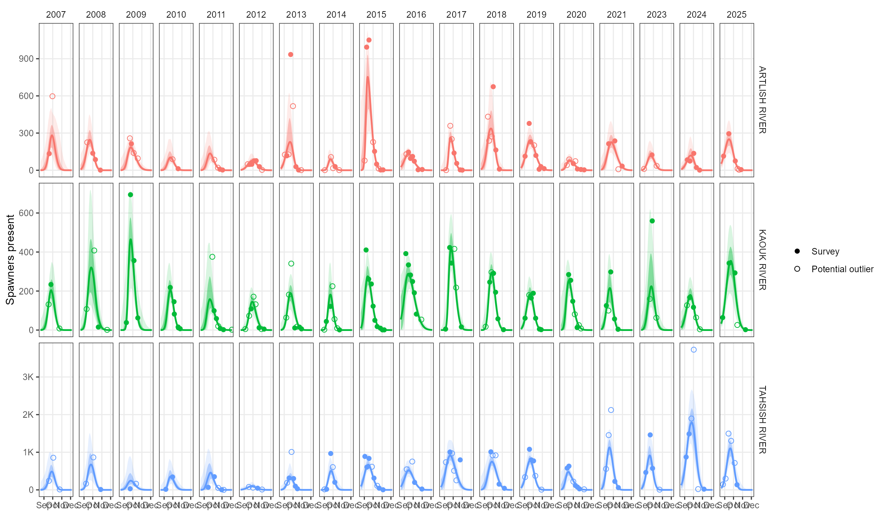
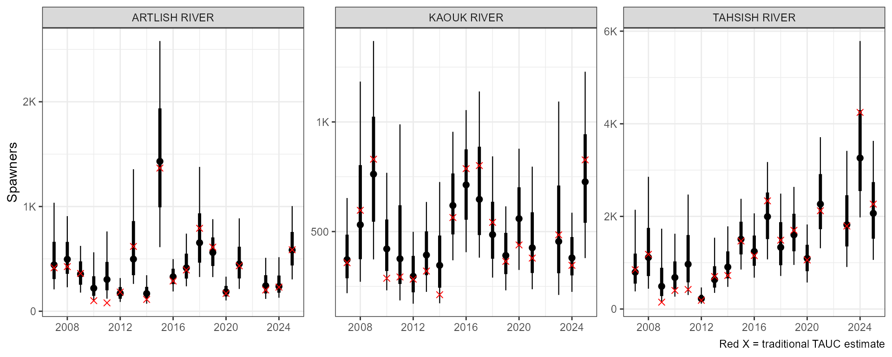
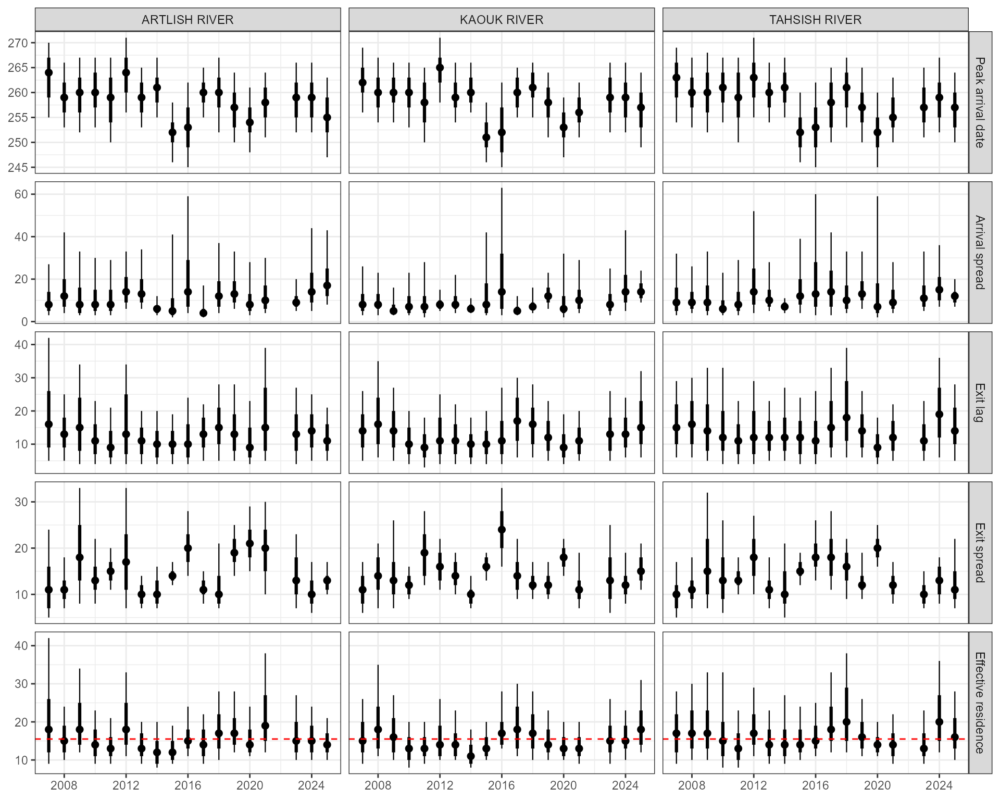

library(spawnBayes)
library(ggplot2)
library(dplyr)
library(lubridate)
knitr::opts_chunk$set(
collapse = TRUE,
comment = "#>",
warning = FALSE,
message = FALSE
)Introduction
In many monitoring programs, salmon abundance is assessed simultaneously across multiple rivers, reaches, or index areas. When populations exhibit similar seasonal timing patterns, analysing groups jointly can improve estimation in years with sparse survey coverage while retaining separate abundance estimates for each group.
This vignette demonstrates the multi-group capabilities of spawnBayes using Chinook salmon survey data from the Artlish, Kaouk, and Tahsish rivers on northwest Vancouver Island. The same dataset is used in the Getting Started with spawnBayes vignette, where only Artlish River is analysed.
Example data
The dataset contains survey observations from three rivers. Groups represent the units for which abundance and timing are estimated separately.
data("nvi_chinook")
summary(nvi_chinook)
#> date stream group spawner_counts
#> Min. :2007-09-18 Length:292 Length:292 Min. : 1.00
#> 1st Qu.:2012-11-06 Class :character Class :character 1st Qu.: 13.75
#> Median :2016-09-28 Mode :character Mode :character Median : 82.00
#> Mean :2016-12-10 Mean : 168.80
#> 3rd Qu.:2020-09-18 3rd Qu.: 215.50
#> Max. :2025-11-12 Max. :1543.00
#> observer_efficiency survey_error_group
#> Min. :0.3067 Length:292
#> 1st Qu.:0.8610 Class :character
#> Median :0.9348 Mode :character
#> Mean :0.9058
#> 3rd Qu.:1.0000
#> Max. :1.0000Validate data
The first step is to validate and standardize the input data. This converts the dates into their proper format and converts observer efficiency and coverage to proportions if they were provided as percentages. Validation may generate warnings if missing correction factors are supplied or if some years show potential evidence of multiple run peaks.
nvi_chinook <- validate_data(nvi_chinook)
summary(nvi_chinook)
#> date stream group spawner_counts
#> Min. :2007-09-18 Length:292 ARTLISH RIVER: 98 Min. : 1.00
#> 1st Qu.:2012-11-06 Class :character KAOUK RIVER :107 1st Qu.: 13.75
#> Median :2016-09-28 Mode :character TAHSISH RIVER: 87 Median : 82.00
#> Mean :2016-12-10 Mean : 168.80
#> 3rd Qu.:2020-09-18 3rd Qu.: 215.50
#> Max. :2025-11-12 Max. :1543.00
#> observer_efficiency survey_error_group coverage
#> Min. :0.3067 HIGH :217 Min. :1
#> 1st Qu.:0.8610 LOW : 7 1st Qu.:1
#> Median :0.9348 MED : 30 Median :1
#> Mean :0.9058 UNKNOWN: 38 Mean :1
#> 3rd Qu.:1.0000 3rd Qu.:1
#> Max. :1.0000 Max. :1Survey observations
Now plot the raw survey counts by date in each year.
ggplot(nvi_chinook |> mutate(year = year(date), day = yday(date)),
aes(x = day, y = spawner_counts, fill = group))+
geom_point(pch = 21, size = 2) +
facet_wrap(~year, scales = "free_y")+
theme_bw() +
theme(
strip.background = element_blank(),
panel.grid.minor = element_blank()
) +
scale_y_continuous(
labels = scales::label_number(
scale_cut = scales::cut_short_scale()
),
name = "Spawners observed"
) +
scale_x_continuous(
labels = function(x)
format(
as.Date(x, origin = "2023-12-31"),
"%b"
),
name = NULL
)
Fit the model
Unlike the single-population analysis presented in the introductory vignette, this model is fit to all three rivers simultaneously. Abundance is estimated separately for each group, but information about seasonal timing is shared hierarchically among groups. This structure can improve estimation in years where individual groups have sparse survey coverage.
fit <- fit_spawner(nvi_chinook, iter_warmup = 500, iter_sampling = 500, assumed_residence = 15.5, adapt_delta = 0.99, refresh = 0)
#> Running MCMC with 4 parallel chains...
#> Chain 1 finished in 281.7 seconds.
#> Chain 2 finished in 294.4 seconds.
#> Chain 3 finished in 364.8 seconds.
#> Chain 4 finished in 392.9 seconds.
#>
#> All 4 chains finished successfully.
#> Mean chain execution time: 333.5 seconds.
#> Total execution time: 393.3 seconds.Model diagnostics
As with single-population analyses, model convergence should be assessed using Rhat, effective sample sizes, divergent transitions, and tree-depth warnings. All diagnostic checks were acceptable in this example.
diagnostics(fit)
#> converged quality divergences treedepth_hits max_rhat min_ess_bulk
#> 1 TRUE acceptable 0 781 1.01 385
#> min_ess_tail recommendation
#> 1 636 Consider increasing max_treedepth.Prior-posterior comparisons
Prior-posterior comparisons provide a useful diagnostic for assessing the extent to which parameter estimates are informed by the data. See the vignette Getting Started with spawnBayes for more information.
prior_post_plot(fit)
Estimated run
The fitted curves represent the estimated number of spawners present through time. Shaded regions show the 66 and 95% credible intervals. Observed survey counts are shown as points. When the outlier model is enabled, open circles indicate surveys with posterior outlier probabilities exceeding 0.25. These surveys show greater conflict with the fitted run-timing and observation model than expected under the primary observation process. Survey observations are plotted after deterministic correction for observer efficiency and survey coverage to facilitate comparison with the estimated number of spawners present.
plot_run_curve(fit,facet = "group_year")
Outlier diagnostics
spawnBayes can identify surveys that deviate
substantially from the overall run-timing pattern. These observations
are not removed from the analysis; instead, the model estimates the
probability that they arise from a higher-variance observation process
and correspondingly reduces their influence on parameter estimation.
Surveys with elevated outlier probabilities may reflect counting errors, unusual survey conditions, inaccuracies in correction factors, or biological patterns that are not fully captured by the run-timing model. Elevated outlier probabilities do not necessarily indicate erroneous data. Rather, they identify observations that are difficult to reconcile with the fitted observation and run-timing processes.
Users are encouraged to inspect years containing surveys with high outlier probabilities and assess whether the fitted run-timing model is appropriate for estimating spawner abundance.
Abundance estimates
Because abundance is estimated separately for each group, the resulting summaries can be used to compare population trajectories among rivers. In this example, the three rivers exhibit substantial variation in abundance among years, despite occurring within the same geographic region.
| group | year | median | lwr_95 | lwr_66 | upr_66 | upr_95 | TAUC | pct_diff_TAUC | multimodal | n_outliers |
|---|---|---|---|---|---|---|---|---|---|---|
| ARTLISH RIVER | 2007 | 443 | 209 | 307 | 663 | 1036 | 415 | 6.7 | FALSE | 1 |
| ARTLISH RIVER | 2008 | 496 | 229 | 357 | 662 | 908 | 426 | 16.4 | FALSE | 1 |
| ARTLISH RIVER | 2009 | 355 | 178 | 253 | 476 | 624 | 361 | -1.7 | FALSE | 3 |
| ARTLISH RIVER | 2010 | 220 | 97 | 147 | 334 | 563 | 101 | 117.8 | FALSE | 1 |
| ARTLISH RIVER | 2011 | 303 | 120 | 200 | 471 | 762 | 80 | 278.8 | FALSE | 2 |
| ARTLISH RIVER | 2012 | 172 | 89 | 119 | 231 | 317 | 183 | -6.0 | FALSE | 2 |
| ARTLISH RIVER | 2013 | 498 | 261 | 344 | 861 | 1356 | 619 | -19.5 | FALSE | 4 |
| ARTLISH RIVER | 2014 | 169 | 72 | 120 | 233 | 344 | 113 | 49.6 | FALSE | 4 |
| ARTLISH RIVER | 2015 | 1431 | 612 | 992 | 1937 | 2580 | 1367 | 4.7 | FALSE | 3 |
| ARTLISH RIVER | 2016 | 329 | 189 | 259 | 406 | 498 | 289 | 13.8 | FALSE | 1 |
| ARTLISH RIVER | 2017 | 414 | 238 | 312 | 550 | 741 | 394 | 5.1 | FALSE | 3 |
| ARTLISH RIVER | 2018 | 654 | 327 | 464 | 935 | 1378 | 792 | -17.4 | FALSE | 3 |
| ARTLISH RIVER | 2019 | 561 | 326 | 432 | 705 | 879 | 612 | -8.3 | FALSE | 1 |
| ARTLISH RIVER | 2020 | 185 | 103 | 141 | 242 | 330 | 170 | 8.8 | FALSE | 3 |
| ARTLISH RIVER | 2021 | 451 | 213 | 313 | 616 | 887 | 434 | 3.9 | FALSE | 1 |
| ARTLISH RIVER | 2023 | 243 | 118 | 170 | 344 | 510 | 203 | 19.7 | FALSE | 2 |
| ARTLISH RIVER | 2024 | 237 | 129 | 177 | 341 | 516 | 230 | 3.0 | FALSE | 0 |
| ARTLISH RIVER | 2025 | 584 | 304 | 437 | 757 | 1004 | 587 | -0.5 | FALSE | 2 |
| KAOUK RIVER | 2007 | 372 | 219 | 287 | 486 | 653 | 358 | 3.9 | FALSE | 2 |
| KAOUK RIVER | 2008 | 531 | 271 | 374 | 803 | 1184 | 597 | -11.1 | FALSE | 3 |
| KAOUK RIVER | 2009 | 762 | 373 | 545 | 1024 | 1369 | 830 | -8.2 | FALSE | 0 |
| KAOUK RIVER | 2010 | 421 | 232 | 320 | 555 | 768 | 287 | 46.7 | FALSE | 0 |
| KAOUK RIVER | 2011 | 376 | 186 | 261 | 620 | 989 | 293 | 28.3 | FALSE | 3 |
| KAOUK RIVER | 2012 | 296 | 171 | 223 | 389 | 499 | 283 | 4.6 | FALSE | 5 |
| KAOUK RIVER | 2013 | 393 | 225 | 301 | 501 | 635 | 320 | 22.8 | FALSE | 4 |
| KAOUK RIVER | 2014 | 346 | 173 | 244 | 482 | 726 | 212 | 63.2 | FALSE | 4 |
| KAOUK RIVER | 2015 | 619 | 369 | 487 | 765 | 955 | 564 | 9.8 | FALSE | 0 |
| KAOUK RIVER | 2016 | 713 | 406 | 554 | 875 | 1054 | 787 | -9.4 | FALSE | 1 |
| KAOUK RIVER | 2017 | 647 | 381 | 484 | 887 | 1139 | 801 | -19.2 | FALSE | 2 |
| KAOUK RIVER | 2018 | 486 | 290 | 376 | 636 | 843 | 542 | -10.3 | FALSE | 2 |
| KAOUK RIVER | 2019 | 391 | 232 | 306 | 494 | 615 | 364 | 7.4 | FALSE | 1 |
| KAOUK RIVER | 2020 | 559 | 325 | 438 | 702 | 878 | 439 | 27.3 | FALSE | 3 |
| KAOUK RIVER | 2021 | 426 | 237 | 311 | 588 | 796 | 379 | 12.4 | FALSE | 1 |
| KAOUK RIVER | 2023 | 455 | 211 | 310 | 710 | 1093 | 485 | -6.2 | FALSE | 2 |
| KAOUK RIVER | 2024 | 380 | 225 | 300 | 475 | 586 | 346 | 9.8 | FALSE | 3 |
| KAOUK RIVER | 2025 | 727 | 379 | 540 | 944 | 1229 | 827 | -12.1 | FALSE | 1 |
| TAHSISH RIVER | 2007 | 796 | 381 | 549 | 1197 | 2143 | 849 | -6.2 | FALSE | 3 |
| TAHSISH RIVER | 2008 | 1114 | 439 | 712 | 1752 | 2855 | 1181 | -5.7 | FALSE | 2 |
| TAHSISH RIVER | 2009 | 491 | 157 | 280 | 891 | 1735 | 148 | 231.8 | FALSE | 1 |
| TAHSISH RIVER | 2010 | 681 | 267 | 437 | 1028 | 1626 | 401 | 69.8 | FALSE | 0 |
| TAHSISH RIVER | 2011 | 967 | 303 | 576 | 1598 | 2472 | 422 | 129.1 | FALSE | 2 |
| TAHSISH RIVER | 2012 | 222 | 115 | 163 | 307 | 466 | 188 | 18.1 | FALSE | 3 |
| TAHSISH RIVER | 2013 | 634 | 349 | 463 | 924 | 1540 | 702 | -9.7 | FALSE | 2 |
| TAHSISH RIVER | 2014 | 907 | 478 | 662 | 1245 | 1785 | 724 | 25.3 | FALSE | 2 |
| TAHSISH RIVER | 2015 | 1507 | 853 | 1179 | 1886 | 2380 | 1469 | 2.6 | FALSE | 2 |
| TAHSISH RIVER | 2016 | 1242 | 677 | 934 | 1587 | 2066 | 1153 | 7.7 | FALSE | 2 |
| TAHSISH RIVER | 2017 | 1995 | 1072 | 1510 | 2516 | 3174 | 2336 | -14.6 | FALSE | 4 |
| TAHSISH RIVER | 2018 | 1333 | 714 | 946 | 1876 | 2492 | 1486 | -10.3 | FALSE | 2 |
| TAHSISH RIVER | 2019 | 1602 | 953 | 1247 | 2057 | 2637 | 1700 | -5.8 | FALSE | 3 |
| TAHSISH RIVER | 2020 | 1093 | 573 | 817 | 1387 | 1826 | 1060 | 3.1 | FALSE | 2 |
| TAHSISH RIVER | 2021 | 2266 | 1312 | 1724 | 2914 | 3711 | 2122 | 6.8 | FALSE | 3 |
| TAHSISH RIVER | 2023 | 1820 | 908 | 1351 | 2457 | 3415 | 1792 | 1.6 | FALSE | 1 |
| TAHSISH RIVER | 2024 | 3261 | 1979 | 2547 | 4295 | 5787 | 4246 | -23.2 | FALSE | 3 |
| TAHSISH RIVER | 2025 | 2067 | 1061 | 1518 | 2741 | 3631 | 2266 | -8.8 | FALSE | 5 |
The abundance plot shows the median (point) as well as the 66 and 95% posterior credible intervals. The red x shows the estimate based on trapezoidal area under the curve, with an assumed 15.5 day residence (survey life).
plot_abundance(fit)
# Timing estimatesAlthough the three rivers are geographically proximate, timing differs among groups and among years. The multi-group model estimates these patterns simultaneously, allowing information to be shared across groups while retaining group-specific timing estimates.
plot_timing(fit)
Conclusions
spawnBayes can estimate abundance and run timing simultaneously across multiple groups while accounting for uncertainty in both the observation and process components of the model. In this example, Artlish, Kaouk, and Tahsish rivers were analysed jointly, allowing information about run timing to be shared among groups while estimating abundance separately for each river.
Citation
The methods implemented in spawnBayes are described
in:
Thompson, P. L., Akenhead, S. A., and Louie, C. (2026). Estimating spawning salmon abundance from visual surveys: a hierarchical model of arrival and exit dynamics. Canadian Journal of Fisheries and Aquatic Sciences, 83, 1-13. https://doi.org/10.1139/cjfas-2026-0029
Users are encouraged to cite both the package and the accompanying manuscript when using spawnBayes in scientific publications.